Meet Canvas360 — a two-stage framework that injects geometry-aware priors through parallel RGB–depth pretraining, then transfers them to diverse downstream tasks within a single unified model.
Head-to-head
Across both text-to-panorama synthesis and in-context tasks, Canvas360 delivers sharper distortion-aware details, cleaner structure, and seamless boundaries. Representative artifacts of competing methods are marked in red.
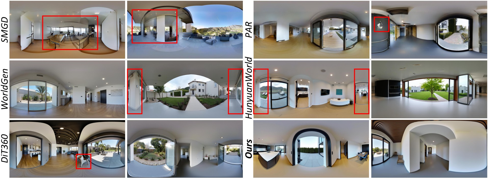
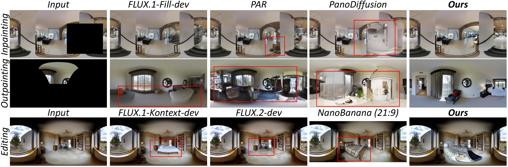
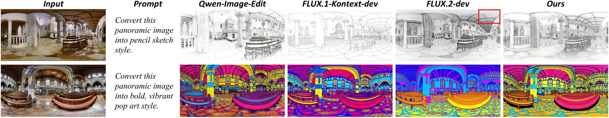
Overview
We present Canvas360, a two-stage framework for in-context panoramic generation that combines geometry-aware pretraining with downstream task-specific fine-tuning. To address the lack of large-scale, high-quality training data tailored to in-context panoramic tasks, we propose Canvas360Dataset, a collection of 1M high-quality paired panoramic samples for style transfer, inpainting, outpainting, and editing.
On the modeling side, Canvas360 enhances text-to-panorama generation through parallel depth generation, velocity circular padding, and similarity loss regularization, enabling the model to learn geometry-aware representations, capture object distortion details, and improve geometric consistency and global coherence. Empowered by strong panoramic priors, Canvas360 enables a unified in-context framework supporting diverse downstream tasks via token-level concatenation.
Extensive experiments show that Canvas360 improves panoramic image fidelity, achieving particularly strong performance on the panorama-specific FAED metric and competitive or leading results across the reported quantitative evaluations.
Why it matters
A data-centric, geometry-aware approach to unified panoramic generation.
Parallel RGB–depth generation, velocity circular padding, and similarity regularization instill spherical spatial priors and seamless 0°/360° boundaries.
A single framework handles style transfer, inpainting, outpainting, and editing through token-level concatenation — surpassing prior methods in task coverage and flexibility.
A scalable data pipeline yields 1M paired samples — 100K RGB–depth panoramas plus 900K in-context samples across four tasks with geometry-aware supervision.
How it works
Canvas360 first learns geometry-aware panoramic priors through text-to-panorama pretraining, then transfers them to downstream tasks via unified in-context fine-tuning.
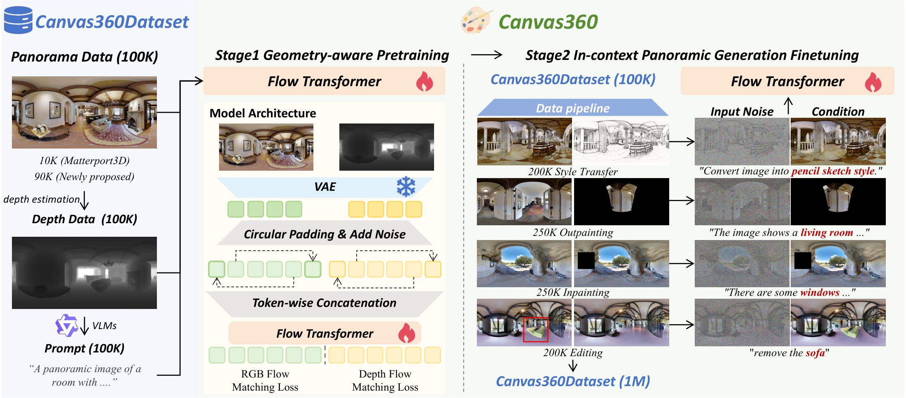
RGB and depth generated in parallel via sequence concatenation, with a positional offset separating the two modalities.
Ghost columns synchronize features across the 0°/360° seam, supervising boundary-consistent velocity prediction.
Penalizes RGB–depth correlation to avoid degenerate collapse and suppress over-darkened failures.
One shared context–prompt–target formulation handles all four tasks under appearance-only supervision.
Data
A scalable synthesis pipeline producing 1M task-driven samples for in-context panoramic generation — explicitly designed with paired input–output data and geometry-aware supervision.
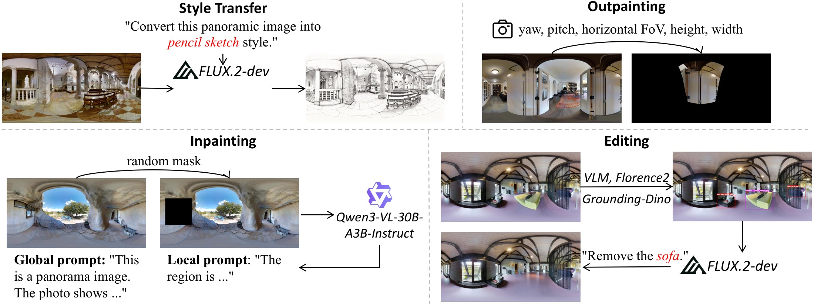
Paired input–output samples across the four tasks. Use the arrows to browse three examples per task.
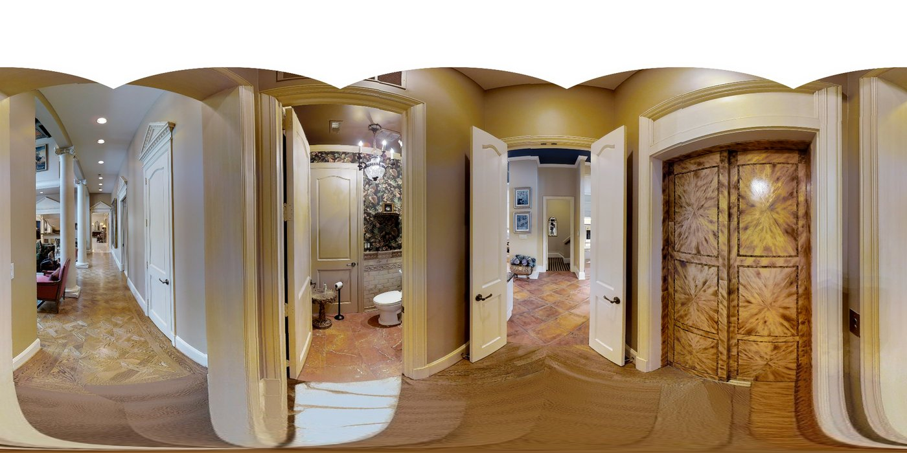
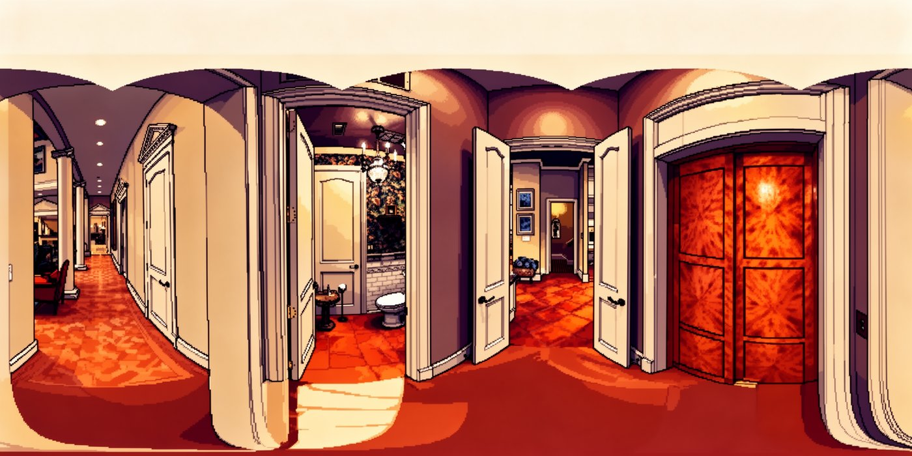
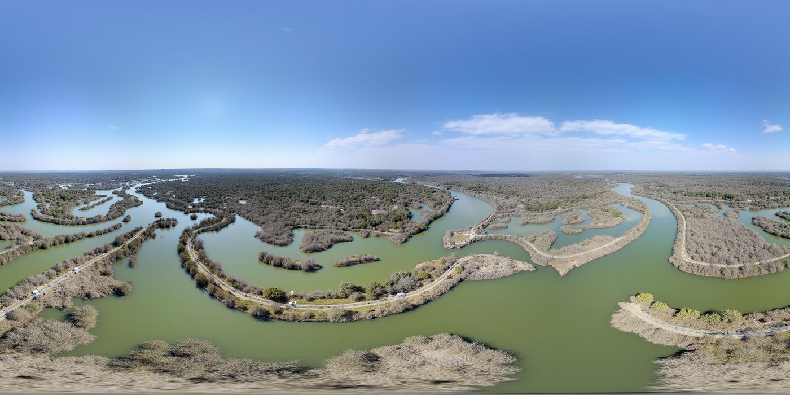
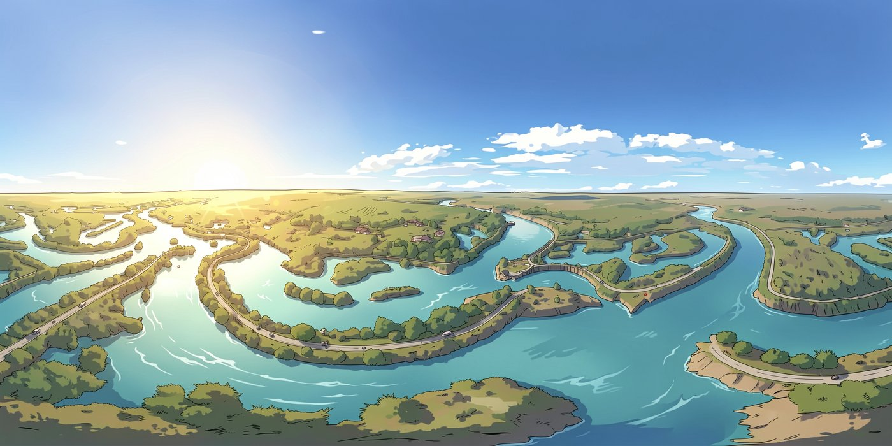
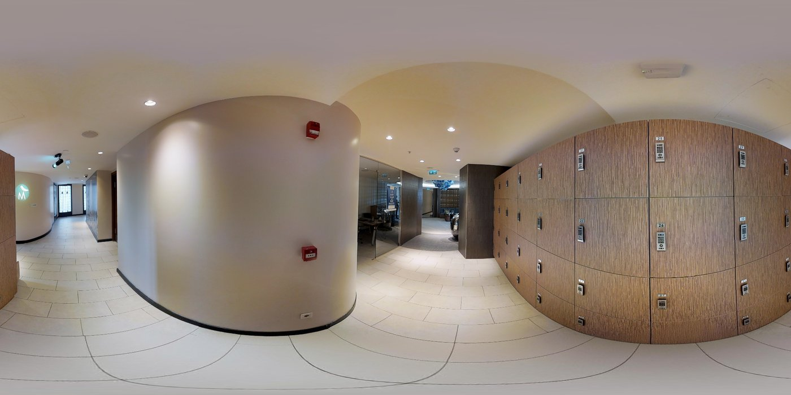
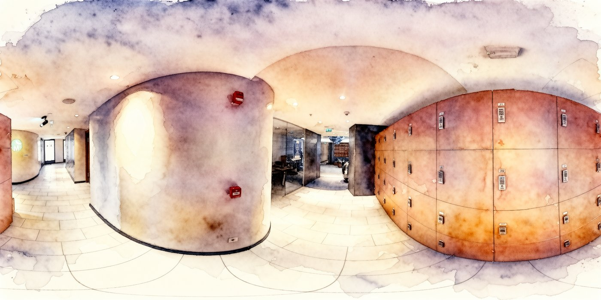
Evaluation
Canvas360 achieves state-of-the-art panorama-specific fidelity (FAED) and leading perceptual quality on text-to-panorama generation, and consistently leads across the in-context tasks of style transfer, inpainting, outpainting, and editing.
| Method | FID↓ | FIDpole↓ | FIDequ↓ | FAED↓ | IS↑ | CS↑ | QAqual↑ | QAaes↑ | BRISQUE↓ | NIQE↓ |
|---|---|---|---|---|---|---|---|---|---|---|
| PanFusion | 124.87 | 182.09 | 108.12 | 11.06 | 1.30 | 28.35 | 3.83 | 3.56 | 27.38 | 4.31 |
| SMGD | 46.72 | 65.69 | 34.84 | 3.29 | 1.40 | 31.14 | 4.05 | 3.77 | 30.35 | 4.75 |
| PAR | 47.72 | 76.93 | 27.39 | 2.97 | 1.34 | 33.85 | 3.91 | 3.54 | 32.26 | 4.38 |
| WorldGen | 67.11 | 79.32 | 33.45 | 3.29 | 1.40 | 34.61 | 4.30 | 3.59 | 32.31 | 4.82 |
| LayerPano3D | 62.82 | 80.37 | 38.67 | 2.98 | 1.50 | 34.40 | 4.73 | 3.93 | 33.91 | 3.79 |
| HunyuanWorld | 76.75 | 106.58 | 41.75 | 2.91 | 1.53 | 34.73 | 4.67 | 3.85 | 39.12 | 5.18 |
| DiT360 | 42.88 | 50.88 | 24.77 | 2.91 | 1.60 | 34.68 | 4.69 | 4.19 | 10.25 | 3.72 |
| Canvas360 (Ours) | 44.17 | 51.02 | 25.96 | 2.33 | 1.76 | 34.62 | 4.71 | 4.20 | 17.12 | 3.70 |
| Method | CP↑ | SR↑ | OV↑ |
|---|---|---|---|
| FLUX.1-Kontext-dev | 0.457 | 0.482 | 0.467 |
| FLUX.2-dev | 0.490 | 0.503 | 0.495 |
| Qwen-Image-Edit | 0.464 | 0.483 | 0.471 |
| Ours | 0.502 | 0.491 | 0.497 |
| Method | LPIPS↓ | FAED↓ | PSNR↑ |
|---|---|---|---|
| FLUX.1-Kontext-dev | 0.102 | 0.458 | 25.77 |
| FLUX.2-dev | 0.099 | 0.410 | 26.17 |
| NanoBanana | 0.094 | 0.395 | 25.91 |
| SE360 | 0.138 | 0.386 | 25.16 |
| Omni2 | 0.105 | 0.392 | 25.03 |
| Ours | 0.084 | 0.358 | 26.40 |
| Method | LPIPS↓ | FAED↓ | PSNR↑ |
|---|---|---|---|
| Flux.1-Fill-dev | 0.171 | 0.461 | 24.23 |
| PAR | 0.158 | 0.455 | 23.76 |
| PanoDiffusion | 0.147 | 0.523 | 23.93 |
| Ours | 0.096 | 0.371 | 25.87 |
| Method | LPIPS↓ | FAED↓ | PSNR↑ |
|---|---|---|---|
| Flux.1-Fill-dev | 0.509 | 1.916 | 16.32 |
| PAR | 0.553 | 1.849 | 16.71 |
| PanoDiffusion | 0.674 | 1.989 | 15.21 |
| Ours | 0.416 | 1.791 | 17.16 |
Across all four in-context tasks, Canvas360 leads on nearly every metric — strongest content preservation and overall vision in style transfer, and the best perceptual similarity (LPIPS), panorama fidelity (FAED), and reconstruction accuracy (PSNR) in inpainting, outpainting, and editing.
In-context tasks
A single unified model applies correct panoramic distortion across inpainting, outpainting, editing, and style transfer — producing clean, geometry-consistent results.
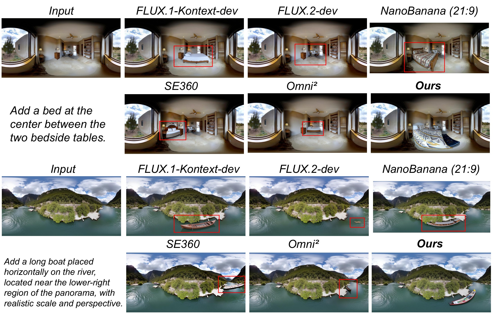
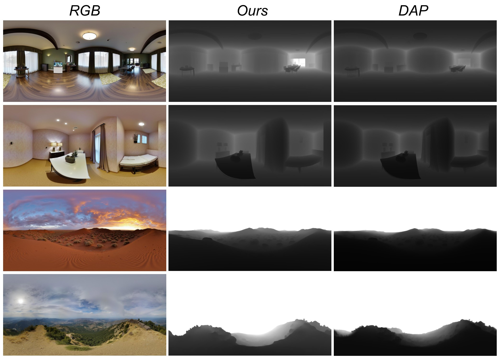
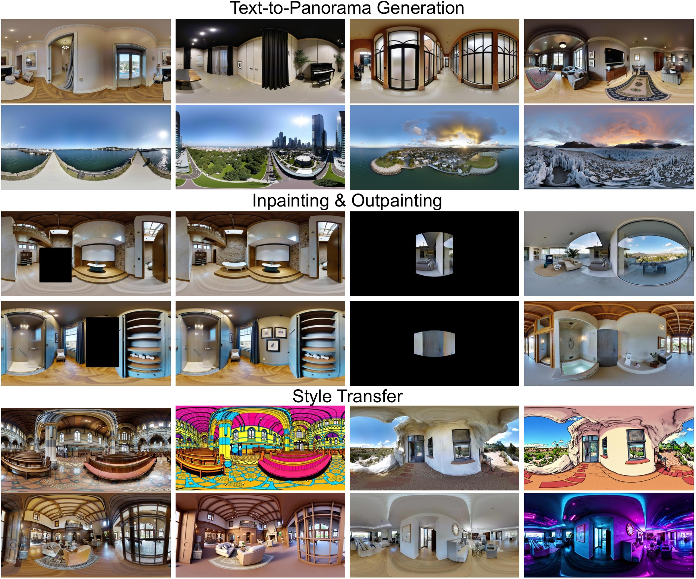
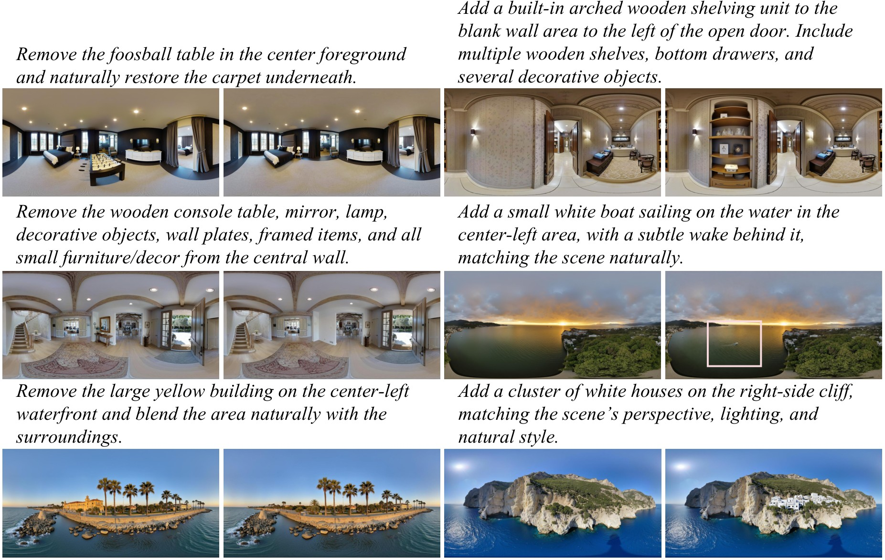
Analysis
Each geometry-aware component contributes to training robustness, boundary continuity, and panorama-consistent generation.
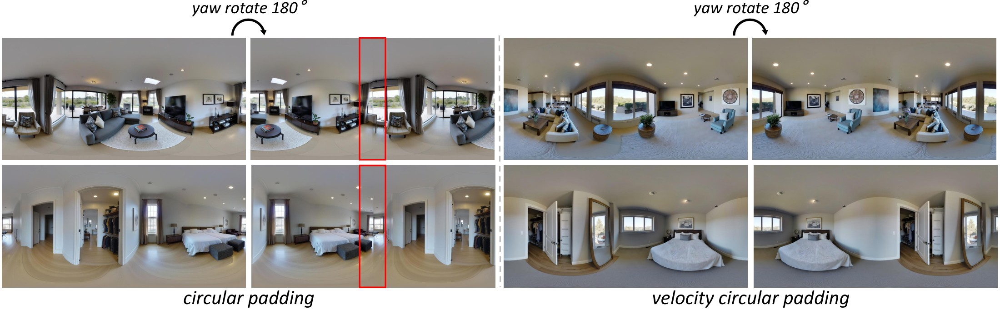
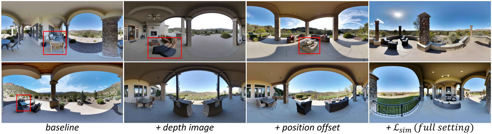
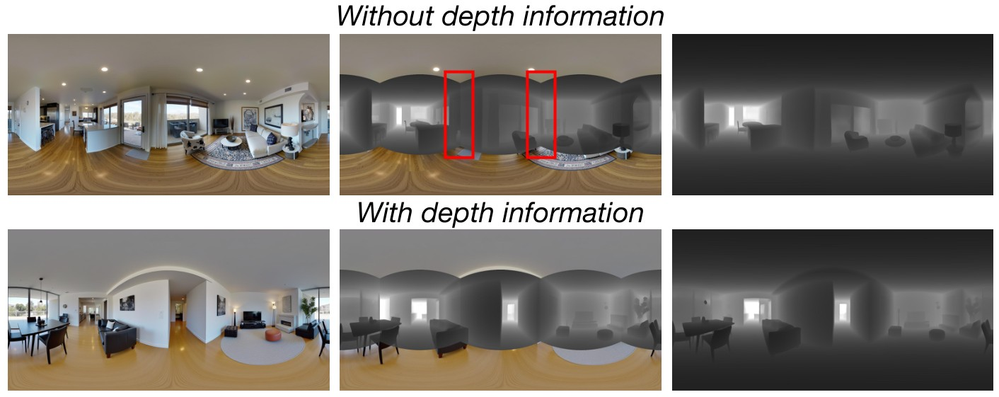
Cite
@article{feng2026canvas360, title = {Enhancing In-context Panoramic Generation via Geometric-aware Pretraining}, author = {Feng, Haoran and Zhang, Ruiyang and Zhang, Longyi and Zhang, Dizhe and Qi, Lu}, journal = {arXiv preprint}, year = {2026} }